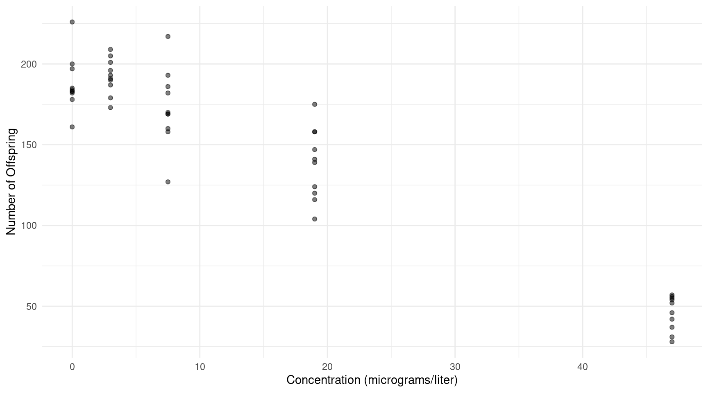
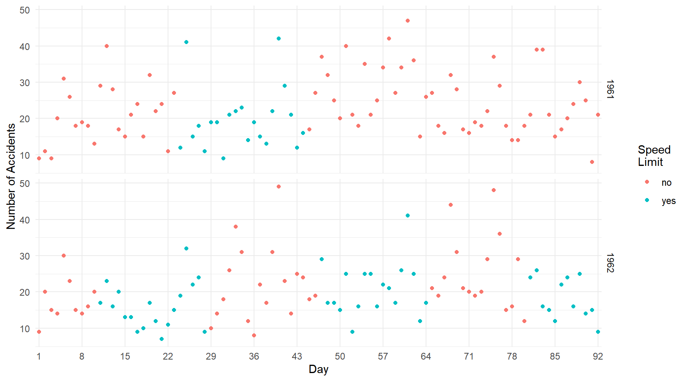

Poisson and Logistic Regression
Statistics 516, Homework 3
You can also download a PDF copy of this homework assignment.
This homework assignment concerns the specification and
interpretation of Poisson and logistic regression models. In comparison
to the past two homework assignments, there is more emphasis here on
interpretation, mainly by using rate or odds ratios. So pay
careful attention to your wording when interpreting a model using one of
these ratios. Use the contrast function from
trtools or functions from the emmeans
package to compute estimates of rate or odds ratios, and estimated
expected counts, rates, and probabilities. All estimates must include
either a standard error or confidence interval.
Instructions
This assignment is due by 11:59 PM on Monday, April 3rd. Email me your homework at trjohns@uidaho.edu. Please submit your homework as a PDF file. Late assignments will be penalized by 10% if turned-in within 12 hours of the deadline, and 10% more for each additional 12 hour interval.
Your solutions must be typed and very neatly organized. I will not try to infer your solutions if they are not clearly presented. Mathematical expressions need not be typeset perfectly but they should be clear. You may substitute letters for symbols (e.g., b1 for \(\beta_1\)) and use other shortcuts for mathematical notation if no meaning is lost.
You must include with your solutions the relevant R output and R code that created them. Be sure that you provide sufficient code that I can replicate your results. Include both the code and the output within the text of your solutions (not in an appendix) using cut-and-paste. Edit your output so as to provide only that which is relevant to answering the questions. Use a monospace font (e.g., Courier or Monoco) for R code and output for clarity. Do not use a monospace font for text that is not R code or output. Do not answers to questions as comments in R code or Rmarkdown. Use the R command
options(digits = 4)(or some other small number of digits) or reduce the font size to avoid having your output “wrap” across multiple lines. Do not include in your solutions the text of the original question or unnecessary code or output.Plots from R Studio can be exported in various formats or directly to the clipboard using the “export” menu in the top-left part of the plot panel.
It is permitted for you to discuss the homework with other students in the course. However your work including R code, output, and written answers must be your own.
You are very welcome to ask me questions. I will be happy to clarify what I am asking in any of the questions and will provide you some help with solving problems by showing you how to work through similar problems from class. I will also be open to helping with any R problems. If you email me with a R question, it will usually be helpful for you to include enough of your R script so that I can replicate your issue. But please avoid saving all your questions for just before the assignment is due. I can usually respond quickly to questions, but I will sometimes need time to respond.
Lip Cancer in Scotland
The data frame epi.SClip from the epiR
package features data on the incidence of lip cancer in Scotland from
1975 to 1980. The following code processes the data for plotting and
modeling, and shows the first few observations of a new data frame
called lipcancer.1
library(epiR)
data(epi.SClip) # necessary to "load" the data
library(dplyr)
lipcancer <- epi.SClip %>%
mutate(district = factor(district, levels = rev(sort(unique(district))))) %>%
mutate(percent = paste(prop.ag, "%", sep = "")) %>%
mutate(percent = reorder(percent, prop.ag)) %>%
select(district, cases, population, percent)
head(lipcancer) district cases population percent
1 Caithness 11 83190 10%
2 Sutherland 5 37521 16%
3 Ross-Cromarty 15 129271 10%
4 Banff-Buchan 39 231337 16%
5 Nairn 3 29374 10%
6 Skye-Lochalsh 9 28324 16%The data show for each of 56 districts the number of cases of lip cancer, the population (in person-years), and the percent of the population engaged in outdoor activity. Person-years is the sum of the number of years of exposure of all the people living in each district between 1975 to 1980.2 The percent of people involved in outdoor activity (e.g., agriculture, fishing, forestry) is of interest because exposure to sunlight is a risk factor for lip cancer.3 The plot below shows the number of cases of lip cancer per person-year for each district, grouped by percent of the population engaged in outdoor activity. Note that the size of each point is proportional to the number of person-years for that district.
library(ggplot2)
p <- ggplot(lipcancer, aes(y = district, x = cases/population)) +
theme_minimal() + geom_point(aes(size = population)) +
facet_grid(percent ~ ., scales = "free_y", space = "free_y") +
labs(y = NULL, x = "Cases per Person-Year", size = "Person-Years:") +
scale_x_continuous(labels = scales::label_number()) +
theme(axis.text.y = element_text(size = 7), legend.position = "top")
plot(p) The objective here will be to model the relationship between the incidence rate of lip cancer and the percent of the population engaged in outdoor activity using Poisson regression.
Estimate a Poisson regression model for the rate of lip cancer, using the percent of the population engaged in outdoor activity as the only explanatory variable. Note that it will be treated here as a categorical explanatory variable, which will happen automatically since it is stored in the data frame as a character rather than a number. You will not be using
districtas an explanatory variable in your model.4 Be sure to include an offset variable to account for differences in the person-years across districts. Show the parameter estimates and their standard errors using thesummaryfunction so that I can verify that you estimated the model correctly.Estimate the expected number of cases of lip cancer per 100K (i.e., 100,000) person-years for each value of the percent of the explanatory variable. But be sure that you set the value of the offset variable to account for the fact that you are estimating the rate per 100K person-years and not per person-year.
Estimate five rate ratios to compare the rate of lip cancer at 1%, 7%, 10%, 16%, and 24% versus 0% of the population involved in outdoor activity. Write a sentence or two to interpret each estimated rate ratio in terms of the relationship between the percent of the population involved in outdoor activity and the rate of lip cancer.
Treatment of Familial Adenomatous Polyposis
Familial
adenomatous polyposis (FAP) is a rare genetic condition that causes
polyps to form in the large intestine and rectum. These polyps are
likely to later become cancerous. Data from a study that investigated
the effectiveness of a non-steroidal anti-inflammatory drug for treating
FAP are in the data frame polyps in the package
HSAUR3.5
library(HSAUR3)
polyps number treat age
1 63 placebo 20
2 2 drug 16
3 28 placebo 18
4 17 drug 22
5 61 placebo 13
6 1 drug 23
7 7 placebo 34
8 15 placebo 50
9 44 placebo 19
10 25 drug 17
11 3 drug 23
12 28 placebo 22
13 10 placebo 30
14 40 placebo 27
15 33 drug 23
16 46 placebo 22
17 50 placebo 34
18 3 drug 23
19 1 drug 22
20 4 drug 42The plots below show the raw data.
library(ggplot2)
library(cowplot)
p1 <- ggplot(polyps, aes(x = treat, y = number, fill = treat)) + theme_minimal() +
geom_dotplot(binaxis = "y", stackdir = "center", show.legend = FALSE, binwidth = 1) +
labs(x = "Treatment", y = "Number of Polyps") + ylim(0, 63)
p2 <- ggplot(polyps, aes(x = age, y = number, color = treat)) + theme_minimal() +
geom_point() + labs(x = "Age (years)", y = NULL, color = "Treatment") +
theme(legend.position = c(0.8, 0.8)) + ylim(0, 63)
plot_grid(p1, p2, rel_widths = c(1, 3)) Twenty subjects with FAP were randomly assigned to either a treatment (drug) or control (placebo) group. After twelve months the polyps in each subject were counted. The focus here is on the statistical relationship between the number of polyps and the treatment condition. But subject age can be used as a covariate since the number of polyps may depend on age.6 Here you will use Poisson regression to make inferences about the treatment effect as well as the effect of age on the number of polyps for people with FAP.
Estimate a Poisson regression model with the number of polyps as the response variable and only treatment as the explanatory variable (do not include age yet). Report the parameter estimates and their standard errors using
summaryso that I can verify that you estimated the model correctly. Estimate the rate ratio for the effect of the treatment, and write a sentence or two to interpret this rate ratio in terms of the effect of the treatment on the number of polyps. Finally estimate the expected number of polyps for each treatment group.Estimate a Poisson regression model with the number of polyps as the response variable and both treatment and age as the explanatory variables. Do not include an interaction between treatment and age.7 Estimate two rate ratios — one for the effect of the treatment and one for the effect of age.8 Write a sentence or two that interprets each rate ratio in terms of the relationship between the explanatory variable and the number of polyps. Also estimate the expected number of polyps for a 30-year old person who receives the treatment, and for someone of the same age that does not receive the treatment.
Using the model with both treatment and age as explanatory variables, plot two curves showing the estimated expected number of polyps as a function of treatment and age. Your plot should also include the raw data like the plot on the right-hand side above. You can use the code above that creates the object called
p2as the basis of your plot.The model you estimated with both treatment and age as explanatory variables can be written as the nonlinear model \[ E(Y_i) = \exp(\beta_0 + \beta_1x_{i1} + \beta_2x_{i2}), \] where \(Y_i\) is the number of polyps, and \(x_{i1}\) and \(x_{i2}\) represent treatment and age (although which represents treatment and which represents age will depend on the order that you specified the explanatory variables in the model formula argument of
glm). Estimate the model above using thenlsfunction and show the parameter estimates and standard errors using thesummaryfunction. These should be similar but not equal to what you got usingglm(note that you can use the estimates fromglmas your starting values). The Poisson distribution assumes a variance structure such that \(\text{Var}(Y_i) = E(Y_i)\), which suggests that if dealt with the heteroscedasticity using weights then we would use weights of \(w_i = 1/E(Y_i)\) which can be approximated as \(w_i = 1/\hat{y}_i\), where \(\hat{y}_i\) is the predicted value. Now estimate the model above again usingnls, but use iteratively weighted least squares with the weights defined as above. Report the parameter estimates and their standard errors usingsummary. If you do this correctly the estimates should be the same as what you got fromglm, but the standard errors will not necessarily be the same.9 Note: This problem is extra credit for students in Stat 436, but is required for students in Stat 516.
Analgesic Potency
The data frame analgesics in the
trtools package is from a study comparing four
analgesics at varying doses.10 Here are the data in aggregated form.
library(trtools)
analgesics analgesic dose responding tested
1 morphine 1.50 19 103
2 morphine 3.00 53 120
3 morphine 6.00 83 123
4 amidone 1.50 14 60
5 amidone 3.00 54 110
6 amidone 6.00 81 100
7 pethidine 5.00 13 60
8 pethidine 7.50 27 85
9 pethidine 10.00 32 60
10 pethidine 15.00 55 90
11 pethidine 20.00 44 60
12 phenadoxone 0.75 31 90
13 phenadoxone 1.50 54 80
14 phenadoxone 3.00 80 90Mice were randomly assigned one of four analgesics (morphine hydrochloride, amidone, phenadoxone, or pethidine hydrochloride) at one of nine doses. Each mouse was administered a number of electric shocks until a pain response (a squeak) was elicited. This was done before the administration of the analgesic (as a baseline) and after. A mouse was recorded as “responding” to an analgesic if at least four more shocks were required to elicit a pain response than before the analgesic was administered. The plot below shows the proportion of mice responding to the analgesic.
library(ggplot2)
p <- ggplot(analgesics, aes(x = dose, y = responding/tested, color = analgesic)) +
theme_minimal() + geom_point() + theme(legend.position = c(0.85,0.25)) + ylim(0, 1) +
labs(x = "Dose (mg/kg)", y = "Proportion Responding", color = "Analgesic")
plot(p) The goal here is to model how the mice respond to the different
analgesics using logistic regression.
The goal here is to model how the mice respond to the different
analgesics using logistic regression.
Estimate a logistic regression model for the proportion of mice responding to the analgesics, using both the type of analgesic and the dose as explanatory variables. This model will include an interaction so that the odds ratio for dose depends on the type of analgesic used, but will also include a constraint that the probability of a response is the same at a dose of zero (since then the type of analgesic is irrelevant). To do this, specify the right-hand side of the model formula argument of the
glmfunction as simplyanalgesic:dose. To verify that you estimated the model correctly, show the parameter estimates and their standard errors usingsummary.Using the model you estimated above, plot the estimated expected proportion of responses (which is also the estimated probability of a response) as a function of type of analgesic used and the dose. This plot should also include the observed proportions as shown above.
Estimate the probability of a response for each analgesic at a dose of 0 mg/kg, and again at a dose of 5 mg/kg. Note that you should find that the estimates at 0 mg/kg are the same for the four analgesics.
Estimate the odds ratio for the effect of increasing dose by one unit for each of the four analgesics. For each odds ratio, write a sentence or two that interprets the odds ratio in terms of the relationship between dose and the response.
It can be seen from the output of
summaryfor the model you estimated above that it can be written as \[ O_i = \begin{cases} e^{\beta_0}e^{\beta_1d_i}, & \text{if the analgesic is amidone}, \\ e^{\beta_0}e^{\beta_2d_i}, & \text{if the analgesic is morphine hydrochloride}, \\ e^{\beta_0}e^{\beta_3d_i}, & \text{if the analgesic is pethidine}, \\ e^{\beta_0}e^{\beta_4d_i}, & \text{if the analgesic is phenadoxone hydrochloride}, \end{cases} \] where \(O_i\) is the odds of responding and \(d_i\) is the dose of the analgesic. The odds ratios for the effect of a one unit increase in dose for amidone, morphine hydrochloride, pethidine, and phenadoxone hydrochloride can be shown to be equal to \(e^{\beta_1}\), \(e^{\beta_2}\), \(e^{\beta_3}\), and \(e^{\beta_4}\), respectively. You estimated these odds ratios in the previous problem. Now consider the problem of testing if the odds ratio for, say, morphine hydrochloride is different from that for each of the other three analgesics. This would amount to testing each of the null hypotheses \(\beta_1 - \beta_2 = 0\), \(\beta_3 - \beta_2 = 0\), and \(\beta_4 - \beta_2 = 0\). This can be done several ways. One is to use thelinconfunction from the trtools package. But it can also be done usingcontrastfrom the same package, or by using functions from the emmeans package. Test each of the three null hypotheses using a significance level of \(\alpha\) = 0.05. Be sure to state your conclusion. Note: This problem is extra credit for students in Stat 436, but is required for students in Stat 516.
Race and the Death Penalty
The data frame deathpenalty in the package
catdata tabulates judgments of the death penalty in
cases of murder in Florida between 1976 and 1987.11 The race of the
defendant and victim were also recorded. The data are in a form that is
not very convenient for modeling.
library(catdata)
data(deathpenalty)
deathpenalty DeathPenalty VictimRace DefendantRace Freq
1 0 0 0 139
2 1 0 0 4
3 0 1 0 37
4 1 1 0 11
5 0 0 1 16
6 1 0 1 0
7 0 1 1 414
8 1 1 1 53Here values of 0 and 1 correspond to no and yes,
respectively, for the variable DeathPenalty, and
black and white, respectively, for the variables
VictimRace and DefendentRace. It is useful to
make these variables factors with clearly labeled values. To avoid
confusion I will create a new data frame called
dpenalty.
library(dplyr)
dpenalty <- deathpenalty %>%
mutate(DeathPenalty = factor(DeathPenalty, levels = c(0,1), labels = c("no","yes"))) %>%
mutate(VictimRace = factor(VictimRace, levels = c(0,1), labels = c("black","white"))) %>%
mutate(DefendantRace = factor(DefendantRace, levels = c(0,1), labels = c("black", "white")))
dpenalty DeathPenalty VictimRace DefendantRace Freq
1 no black black 139
2 yes black black 4
3 no white black 37
4 yes white black 11
5 no black white 16
6 yes black white 0
7 no white white 414
8 yes white white 53Consider using logistic regression to model these data with
DeathPenalty as the response variable. It is possible to
model the data in this form, and I will show you how that can be done in
the solutions. But I will put the data in a form that is more familiar
to you when using logistic regression.
library(tidyr)
dpenalty <- dpenalty %>%
pivot_wider(names_from = DeathPenalty, values_from = Freq)
dpenalty# A tibble: 4 × 4
VictimRace DefendantRace no yes
<fct> <fct> <int> <int>
1 black black 139 4
2 white black 37 11
3 black white 16 0
4 white white 414 53Here the data are in the familiar aggregated form where for each
combination of VictimRace and DefendentRace we
have the number of cases where the death penalty was and was not
decided. These data can be used to demonstrate what is sometimes called
Simpson’s
Paradox which occurs when the association between two variables
reverses when we collapse across a third variable. Here you will use
logistic regression with the data frame dpenalty to explore
this phenomenon.
First consider using only paying attention to the defendant’s race. We can compute the proportion of cases where the death penalty was imposed as follows.
dpenalty %>% group_by(DefendantRace) %>% summarize(no = sum(no), yes = sum(yes)) %>% mutate(proportion = yes / (no + yes))# A tibble: 2 × 4 DefendantRace no yes proportion <fct> <int> <int> <dbl> 1 black 176 15 0.0785 2 white 430 53 0.110From this we can see that a slightly larger proportion of white defendants were given the death penalty in comparison to black defendants. Estimate a logistic regression model with the proportion of judgments resulting in the death penalty as your response variable, but using only the defendant’s race as an explanatory variable. Report the parameter estimates and their standard errors using
summaryso I can verify that you estimated this model correctly. Estimate (a) the probability of a death penalty decision for each race of the defendant, and (b) the odds ratio that summarizes the relationship between the defendant’s race and the death penalty decision. Summarize the odds ratio in a sentence or two that describes the relationship between the race of the defendant and the death penalty decision.Now consider all conditioning on the race of the victim. We can compute the proportion of cases where the death penalty was imposed as follows.
dpenalty %>% mutate(proportion = yes / (no + yes)) %>% arrange(VictimRace)# A tibble: 4 × 5 VictimRace DefendantRace no yes proportion <fct> <fct> <int> <int> <dbl> 1 black black 139 4 0.0280 2 black white 16 0 0 3 white black 37 11 0.229 4 white white 414 53 0.113Note that now a larger proportion of black defendants were given the death penalty when the victim is black, but also when the victim is white. This apparent reversal is due to two things. First, the death penalty is given more often when the victim is white, and secondly there is an association between the race of the defendant and that of the victim which can be seen in the original data. In a majority of the cases the race of the victim and the defendant are the same as can be seen below.
dpenalty %>% mutate(total = no + yes)# A tibble: 4 × 5 VictimRace DefendantRace no yes total <fct> <fct> <int> <int> <int> 1 black black 139 4 143 2 white black 37 11 48 3 black white 16 0 16 4 white white 414 53 467To account for the race of the victim as well as the defendant, estimate a logistic like that you estimated in the previous problem, but now using both the race of the defendant and the race of the victim as explanatory variables, but do not include an interaction.12 Report the parameter estimates and their standard errors using
summaryso that I can verify that you estimated this model correctly. Estimate (a) the probability of a death penalty decision for each combination of levels of victim’s race and defendant’s race, (b) the odds ratio that summarizes the relationship between the defendant’s race and the death penalty decision, and (c) the odds ratio that summarizes the relationship between the victim’s race and the death penalty decision. Summarize each odds ratio in a sentence or two that describes the relationship between the explanatory variable and the death penalty decision.
Aside from some variable selection and renaming, this code sets the order of the levels of
districtso that they are alphabetical from top to bottom in the plot, and the values ofpercentso that they increase from top to bottom in the plot.↩︎Person-years is a common denominator in rates in epidemiology. It allows us to estimate the number of cases per person per year, controlling for both the number of people and how long they were observed. To compute person-years one needs to sum the years of observation of all the people observed. It also allows to account for changes in the size of the population. For example, suppose we observed a very small population for five years. Two of the people lived there all five years, but one person moved away after the third year. The total number of person-years would then be 5 + 5 + 3 = 13.↩︎
One must be very cautious about assuming that a relationship at the group level (e.g., district) implies a similar association at the individual level. This is known as the ecological fallacy. Districts with a larger percent of the population engaged in outdoor activities may differ in other ways from those with a smaller percentage that may, in part, be responsible for a higher incidence of lip cancer.↩︎
There may be considerable variation in the rate of lip cancer across districts, even among those with the same percent of the population engaged in outdoor activity. There are several ways that we might try to account for this. One would be to account for over-dispersion in the data due to variation between districts. Another approach would be to introduce a random effect for district. You might consider these approaches in future homework assignments.↩︎
Giardiello, F. M., Hamilton, S. R., Krush, A. J., Piantadosi, S., Hylind, L. M., Celano, P., Booker, S. V., Robinson, C. R., & Offerhaus, G. J. (1993). Treatment of colonic and rectal adenomas with sulindac in familial adenomatous polyposis. New England Journal of Medicine, 328(18), 1313–1316.↩︎
This model can be thought of a Poisson regression version of an analysis of covariance which uses a covariate to “control” for some variation in the response variable to improve inferences for the treatment variable in a randomized experiment.↩︎
The interaction is negligible so we will ignore it.↩︎
Note that since there is no interaction modeled between treatment and age the estimated rate ratio for one variable will not depend on the value of the other, so what value you use is arbitrary if you specify it using
contrastoremmeans.↩︎The reason that the standard errors are not the same is that Poisson regression assumes the variance structure \(\text{Var}(Y_i) = E(Y_i)\) whereas using the weights as above assumes that \(\text{Var}(Y_i) = \phi E(Y_i)\) for some unknown value of \(\phi\). That is, iteratively weighted least squares assumes that \(\text{Var}(Y_i)\) is proportional to (rather than equal to) \(E(Y_i)\), which we can write as \(\text{Var}(Y_i) \propto E(Y_i)\). Interestingly it turns out that using iteratively weighted least squares with
nlsis effectively equivalent to using quasi-likelihood.↩︎Grewal, R. S. (1952). A method for testing analgesics in mice. British Journal of Pharmacology and Chemotherapy, 7, 433–437.↩︎
Radelet, M. & Pierce, G. L. (1991). Choosing those who will die: Race and the death penalty in Florida, Florida Law Review, 43(1), 1–34.↩︎
The interaction is negligible so for simplicity we will ignore it.↩︎